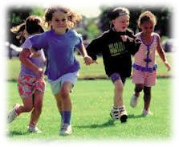
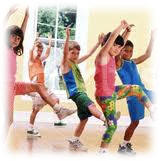

|
Top 10 exercises for children |
|
|
Walking
Taking brisk walk in the morning and evening helps a lot to
reduce weight
not only for
children but
for adults also. |
 |
|
Running
Running is a very good exercise and children love doing this.
You can make few more children get involved in it and they will
definitely enjoy the working out like a game. |
 |
|
Jogging |
 |
|
Skipping
Skipping is no more a game and physical activity for girls. Boys
like rope skipping a lot and they enjoy it more like a game than
workout. |
 |
|
Cycling
If you are living in a colony, there must be many children of
the same age group as of your child. Make cycling a group
activity and let them have some treasure hunting or simple
cycling activity altogether. |
|
|
Swimming
Today almost all apartments and colonies have a swimming pool
and children love swimming especially in summer days. Make this
a part of life and this is the best exercise to keep in shape. |
|
|
Dancing
If your child has interest in dancing, let him join a dancing
club or class and enjoy the physical activity. |
|
|
Aerobics
Girls would love to join aerobics classes. |
 |
|
Yoga and Pranayama You can help your child make yoga as a part of his life. This will help him throughout his life. |
|
|
Horse
Riding
Kids love to have activity that helps them enjoy and have fun
and horse riding is one of their favourites. |
|
|
These exercises can be chosen according to the age and interest
of the child and availability of the facility in your area. You
need to be patient because it may take some time to influence
your child make it a habit.
|
|
|
|
||||||||
|